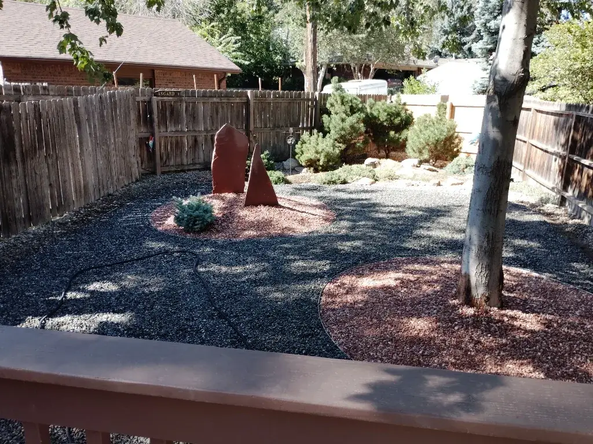

Gravel conversions
Durable gravel beds and clean edges for areas where turf is struggling or maintenance is too high.
We convert tired lawn and difficult spaces into water-wise landscapes using gravel, natural stone, durable edging, and planting choices suited to the property.

Xeriscaping is more than replacing grass with rock. We plan transitions, drainage, access, focal points, and maintenance so the finished yard feels intentional rather than barren.
Durable gravel beds and clean edges for areas where turf is struggling or maintenance is too high.
Flagstone, boulders, monoliths, and retaining elements that create structure and visual interest.
Practical planting zones that complement the hardscape and reduce irrigation demands.
Resource Central’s Lawn Replacement program partners with city water providers — including the City of Longmont — to subsidize turf removal and water-wise conversion for homeowners. Depending on the program year and provider, that can mean paying only a reduced per-square-foot share for a professional conversion.
We build the yard side of it: design, turf removal, grading, gravel and stone installation, and low-water planting zones. You apply directly with the program and we scope the work to fit its guidelines.
Applications open seasonally and funding is limited — homeowners apply through Resource Central first, then installation follows their schedule.
Turf removal and grading to program specs, gravel base and edging, stone features, and water-wise planting that stays within finished requirements.
Ask us about a rebate-eligible conversion See current program details →
Share your goals and we’ll help you explore a water-wise landscape that fits your property.
Start your project